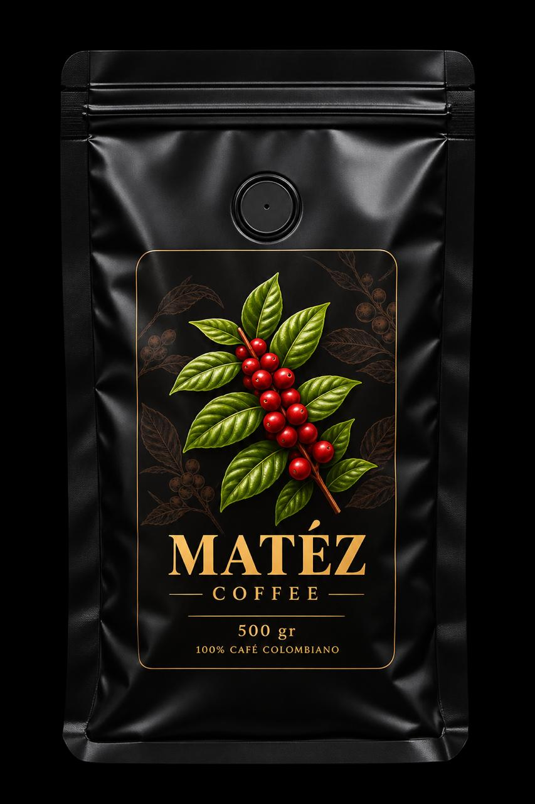
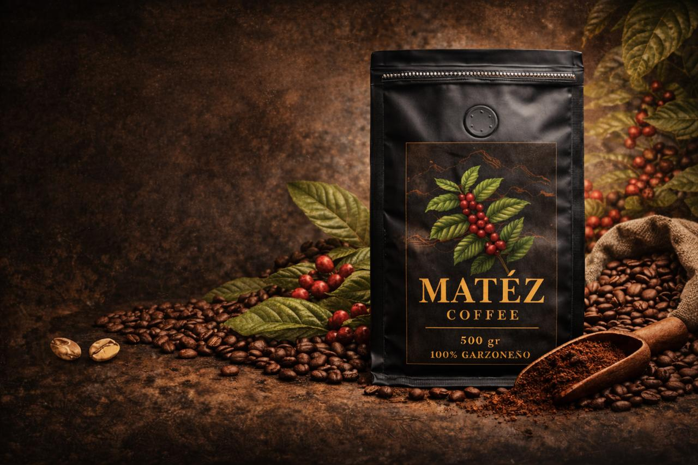
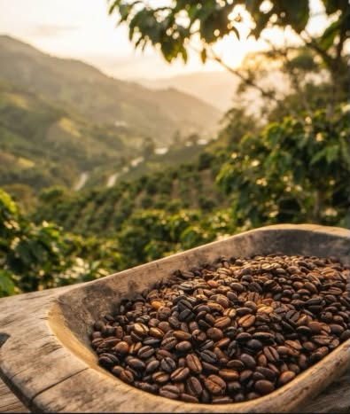

Matez Origen Bourbon
$45.000
Café de especialidad con notas dulces, chocolate y frutos rojos.

Café colombiano · Tostado artesanal
Cultivado a más de 1.900 metros sobre el corazón del Huila, Colombia. Nuestro grano pasa por un proceso totalmente artesanal para garantizar un cuerpo, aroma y sabor únicos en cada taza.
¿Por qué MATEZ?
Trabajamos con productores que cultivan nuestro café respetando la tierra y las comunidades.
Cada lote es tostado cuidadosamente para conservar sus aromas, cuerpo y notas naturales.
Seleccionamos cada grano para ofrecer una experiencia consistente en cada taza.
Nuestros cafés

$45.000
Café de especialidad con notas dulces, chocolate y frutos rojos.
$55.000
Equilibrado y aromático con notas de caramelo y chocolate.
$38.000
Intenso y profundo con notas de cacao y un final prolongado.

Del campo a tu taza
El café MATEZ nace de pequeños productores que mantienen viva una tradición familiar.
Cada grano es seleccionado, procesado y tostado cuidadosamente para conservar todo su carácter, aroma y sabor.
Conoce nuestro proceso →Testimonios
"El Bourbon de Matez tiene un aroma increíble. Desde el primer sorbo se siente la calidad."
Alejandro R.
Cliente MATEZ
"Se nota que es un café cuidado desde el campo hasta que llega a nuestra taza."
Carlos Mendoza
Cliente MATEZ
Suscríbete para recibir nuestros mejores cafés directamente en tu puerta.
Suscríbete Ahora